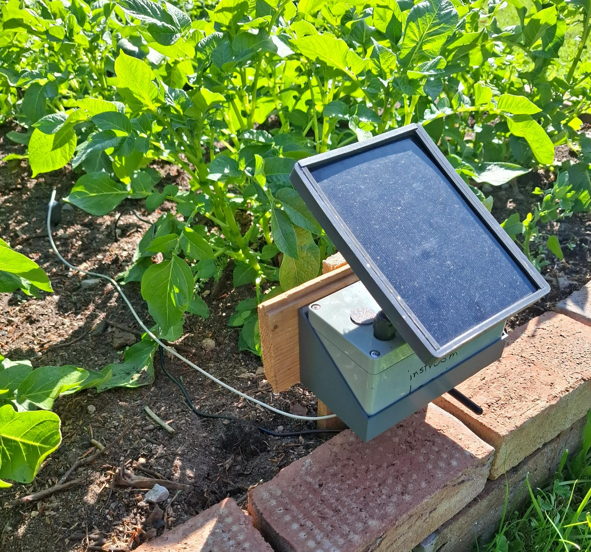

Yes we are!
Live Sensor Data
Wachten op data...
Wachten op data...
Wachten op data...
Time last measurement:
Wachten op data...
Expected next measurement:
Soil Moisture Levels for Compost
| Soil Moisture (%) | Status for veggies | Explanation |
|---|---|---|
| 60–75% | ✅ Optimal |
Compost is moist but not wet – ideal for tuber formation. |
| 50–60% | ⚠️ Still good |
Still sufficient moisture present, but can quickly drop in warm weather. |
| 35–50% | 😟 Thirst phase |
Plant experiences stress; leaves may droop or discolor. |
| < 35% | 🔥 Risk of dehydration |
Too dry for potato growth – compost feels dusty. |
Device settings:
device
battery-voltage
battery-status
ESP-DataHub Offline...
image:
GARDEN